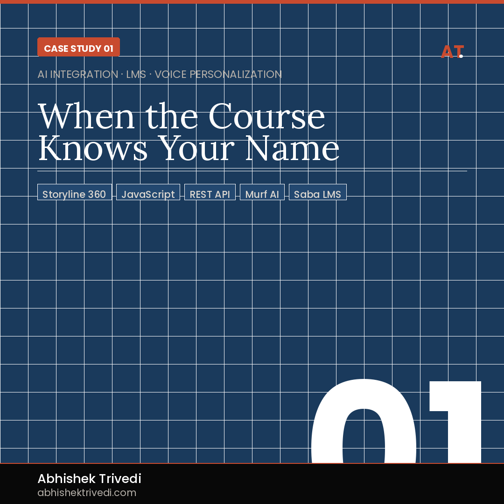
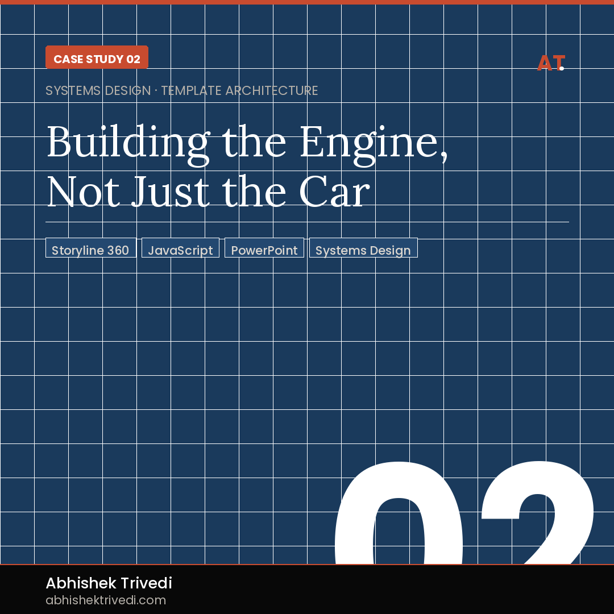
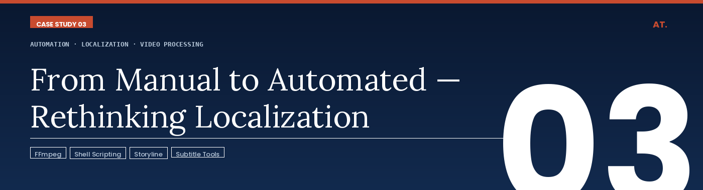

Three projects from my time at Siemens — each one demonstrates a different dimension of technical instructional design: AI integration, systems thinking, and automation engineering.

Standard eLearning treats every learner identically. Generic narration, static content, one-size-fits-all delivery. For a global technology organization deploying training to thousands of employees across regions, this created low engagement and a fundamental disconnect — the course didn't know who it was talking to.
I designed and engineered a personalized learning experience using Articulate Storyline as the delivery layer — but extended far beyond what Storyline is typically used for. Using JavaScript embedded in Storyline, I built API calls that fetched learner data directly from the Saba LMS at course launch. This data — including the learner's name — was passed to the Murf AI voice system, which dynamically generated a personalized audio welcome message in real time. Each learner heard their own name spoken by a natural-sounding AI voice the moment the course launched.
Demonstrated a scalable model for AI-personalized learning without rebuilding the LMS or requiring a custom platform. Proved that LMS learner data can be surfaced dynamically inside Storyline. Opened a pathway for future personalization based on learner role, region, or performance data.
This project challenged the assumption that eLearning personalization requires expensive custom infrastructure. It can be done with the tools most L&D teams already have.
The ability to think beyond the authoring tool — treating Storyline as a front-end layer while connecting to external systems via APIs. This is the gap between an instructional designer and a learning experience technologist.

A global L&D team at Siemens producing dozens of courses per year was rebuilding the same interactions from scratch each time. This wasted development hours, created visual inconsistency across the course library, and made quality control a constant challenge. The team needed a way to scale output without scaling headcount.
I designed a comprehensive Storyline template system from the ground up. The process began in PowerPoint — creating a visual design language and interaction blueprint reviewable by stakeholders before a single Storyline slide was built. This reduced revision cycles significantly. Once approved, I converted designs into fully functional Storyline master templates: reusable slide layouts, pre-built interaction patterns (tabs, accordions, drag-and-drop, branching), and JavaScript-enhanced components for logic that Storyline's native triggers couldn't handle.
Reduced per-course development time significantly by eliminating rebuild cycles. Ensured visual and functional consistency across all courses in the library. Lowered the technical barrier for less experienced developers. Created a reusable asset that continued delivering value long after the initial build.
The template system didn't just speed up one project — it fundamentally changed how the team operated.
Systems thinking applied to L&D — building infrastructure that multiplies team capacity, not just completing individual tasks. This is the difference between a developer who builds courses and an architect who builds systems.

Delivering multilingual training across Siemens' global teams meant manually re-editing videos for every language version — re-timing narration, re-syncing subtitles, re-exporting from multiple tools. For a large course library spanning multiple languages, this was a significant, repetitive time cost that scaled badly.
I designed and built an automated video localization workflow using FFmpeg — an open-source command-line tool for video processing — scripted to handle the repetitive transformation tasks that editors were doing manually. The workflow extracted video and audio components from Storyline-published outputs, processed localized audio tracks (resizing, syncing, mixing), merged new audio with existing video, and applied subtitle overlays — all through scripted automation executable with a single command per language.
Eliminated hours of manual editing per language version. Created a repeatable, documented workflow usable by team members without video editing expertise. Made rapid localization into new languages operationally feasible. Reduced human error in timing and sync that routinely occurred during manual editing.
What previously took a skilled editor several hours per language became a script that anyone could run.
Engineering mindset applied to L&D operations — identifying where automation can eliminate friction, then building the solution. Most instructional designers accept manual workflows. I look for where a script should be doing the work instead.